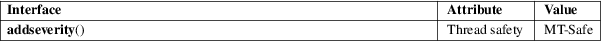

addseverity − introduce new severity classes
Standard C library (libc, −lc)
#include <fmtmsg.h>
int addseverity(int severity, const char *s);
Feature Test Macro Requirements for glibc (see feature_test_macros(7)):
addseverity():
Since glibc 2.19:
_DEFAULT_SOURCE
glibc 2.19 and earlier:
_SVID_SOURCE
This function allows the introduction of new severity classes which can be addressed by the severity argument of the fmtmsg(3) function. By default, that function knows only how to print messages for severity 0-4 (with strings (none), HALT, ERROR, WARNING, INFO). This call attaches the given string s to the given value severity. If s is NULL, the severity class with the numeric value severity is removed. It is not possible to overwrite or remove one of the default severity classes. The severity value must be nonnegative.
Upon success, the value MM_OK is returned. Upon error, the return value is MM_NOTOK. Possible errors include: out of memory, attempt to remove a nonexistent or default severity class.
For an explanation of the terms used in this section, see attributes(7).

GNU.
glibc 2.1. System V.
New severity classes can also be added by setting the environment variable SEV_LEVEL.
fmtmsg(3)